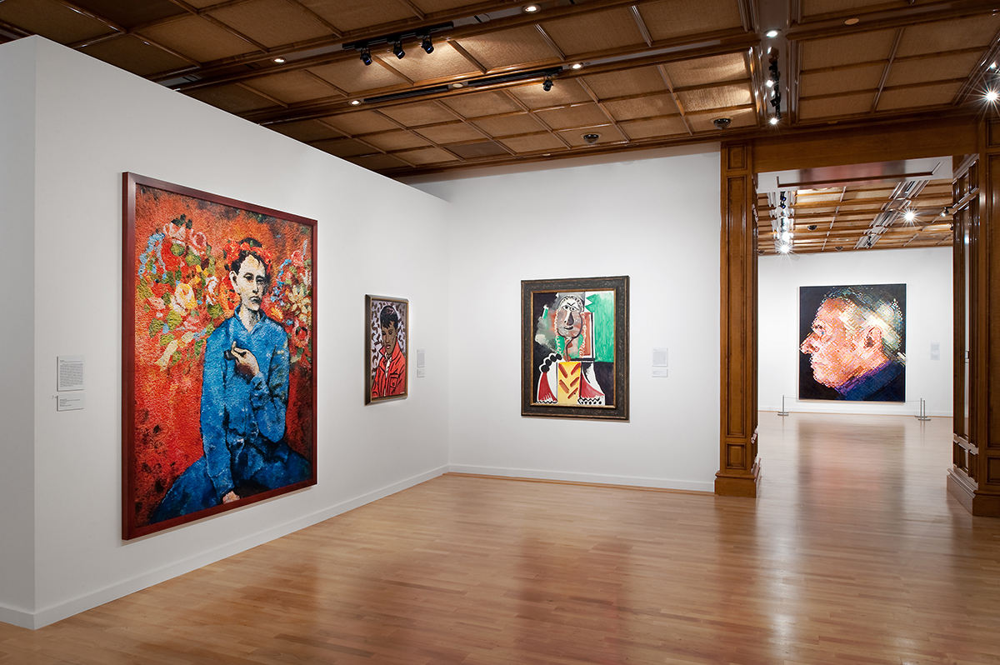
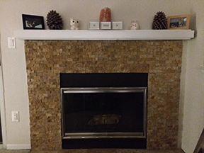
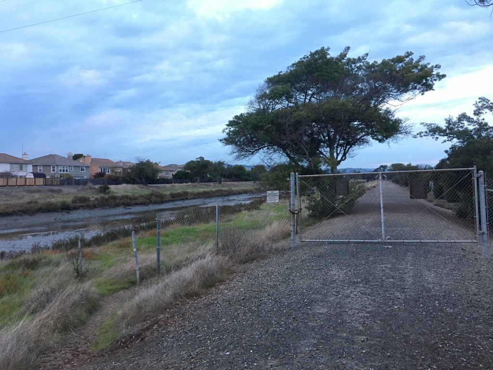
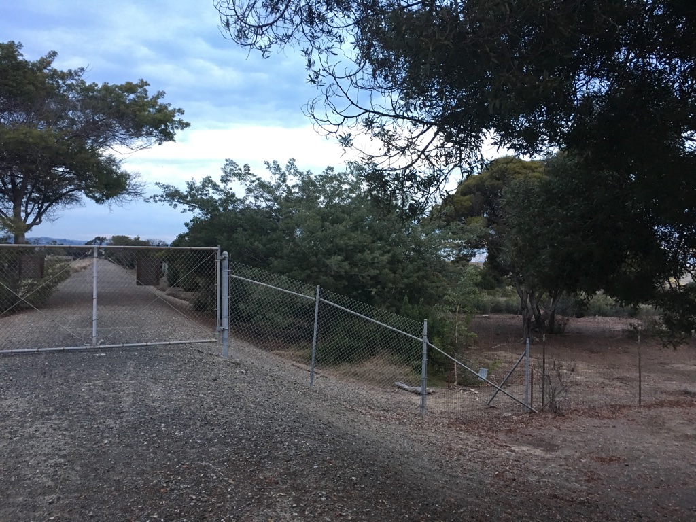

- Intro
- Homography
- Rectification
- Mosaic
- Harris Corners
- ANMS
- Feature Matching
- RANSAC
- Summary
Panorama Stitching
Karl Cempron: CS194-26-AEG
The purpose of this project is to use image warping to achieve wide panoramas from multiple images of the same source content. This part will contain the first half of the project, discussing homography, rectifying an image, and finally, creating a mosaic.
A sample panorama!
The Homography Matrix
In projective geometry, a homography is an isomorphism of projective spaces, induced by an isomorphism of the vector spaces from which they are derived. By limiting the movement of our camera to rotation we are able to generate different perspectives within an image. We can select correspondence points in order to find out how an image was warped, and then rectify them such that the images exist on the same 3d plane. To do this we needed to solve a system of linear equations with 8 unknown variables. Because each correspondence gives us 2 equations each, we could technically solve it with only four correspondences, but to account for possible noise and other shifts more are used to overconstrain the system and is then solved using the least-squares method.
Linear Equation solving for 8 unknowns.
Least Squares approach
Image Rectification
To test the implementation of the homography matrix, we take images and rectify them using four points. The result warps the images to a new planar perspective. In the examples provided I chose to warp them into rectangular forms.
Art Gallery
Wall Painting rectified
 Edgy Sign
Edgy Sign
Rectified Edgy Sign
Image Mosaic
Finally, we warp the images so they're registered and create an image mosaic. Instead of having one picture overwrite the other, which would lead to strong edge artifacts, I use weighted averaging. For mosaics that consist of more than 2 images, I first stitch the first together and then stitch additional ones after with the resultant. The final images displayed below have been cropped to remove any unwanted backgrounds.
Left Image
Right Image
Thames Panorama
Left Image
Right Image
Fireplace Panorama
Left Image
Center Image
Right Image
 Road Panorama
Road Panorama
Harris Corners
Manually defining correspondences can be exhausting for higher number of points. To automate this process, we first obtain an image's harris corners. We run the Harris feature detector algorithm on the Thames images below. This results in close to 2000 selected interest points.
Thames Left
Thames Right
ANMS
ANMS or Adaptive Non-Maximal Supression allows for selecting better interest points than what was initially obtained just from running the harris feature detection algorithm. A lot of these corners are extremely close together and we don't necessarily need all of these corners to make a good feature mapping between images. For each point i, we find the largest radius in which it has the strongest corner strength scaled by some epsilon = .9 for all points j in the corners). We limit the number of resulting corners to 500.
Thames Left
Thames Right
Feature Matching
Before we match features, we want to normalize the points such that they aren't affected by lighting or color. MOPs takes the 40x40 pixel patch around each point and downsamples it to an 8x8 pixel patch. Then itnormalizes the patch by subtracting the mean and dividing by the standard deviation. It is then transformed into a 64-length vector and is the feature vector for this pixel. MOPs is performed on all the points selected by ANMS.
Once we have our descriptors, we use a feature matching algorithm that follows from Lowe's technique. For every feature vector, we compute its squared distance to all the other feature vectors and extract its closest feature vector and second closest feature vector. We want to keep the feature vectors such that their ratio is less than some threshold value = 0.3. If the point exists in the second image, the ratio is likely to be 0, otherwise it will likely be close to 1. The number of points is slightly reduced from the set retrieved via ANMS.
Thames Left
Thames Right
RANSAC
Although we removed some outliers with feature matching, there are still a few that remain. We use RANSAC to compute a homography that can support the largest number of inliers. For each iteration of the algorithm (I run it 500 times), I randomly choose 4 pairs of points from the feature mapping and compute a homography. I then project the points from the first image to the second, and calculate the distance between the two sets of points. For each projected point, if the distance between it and the actual point is 10 or less, I would add that to the current iteration's inlier set. Out of all the iterations, I take the largest inlier set, and recompute an approximate homography and create the mosaic.
Thames Manual Mosiac
Thames Automatic Mosaic
Here are some more mosaic examples:
Lot Automatic Mosaic
Cory Automatic Mosaic
The Reflection
Firstly I was impressed with how it was possible to warp 1 image into another plane via a 3x3 matrix and perhaps was more surprised on how someone was able to derive such an awesome transformation. Secondly, I was surprised on how easy it is to actually make panoramic images though I believe that the Harris feature detector algorithm that was already provided did all the work!